Lavabos.
Te proponemos de una amplia oferta de lavabos para baños– de porcelana, cristal, acero inoxidable, acero vitrificado, madera, corian, piedra natural, etc …, una selección de las principales marcas de baños de diseño nacionales e internacionales.
La selección está basada siempre en criterios estéticos, de tamaño, de funcionalidad y por supuesto de precios. Podrás encontrar aquel modelo de lavabo que necesites tanto para tus proyectos, si eres interiorista o arquitecto; como para tu vivienda, si eres un particular.
Ven a ver la selección de marcas y modelos de lavabos a nuestra tienda – showroom, y únete a nosotros en redes sociales y la newsletter, para estar siempre al día de las últimas novedades, alguna de las cuales puedes ver a continuación.
Marcas en el showroom
- Alape
- Catalano
- Duravit
- Pozzi Ginori
- Villeroy & Boch
- Glass Design Italy
Y si lo que buscas no está en exposición, lo buscamos en la Bagnoteca.
Novedades 202647

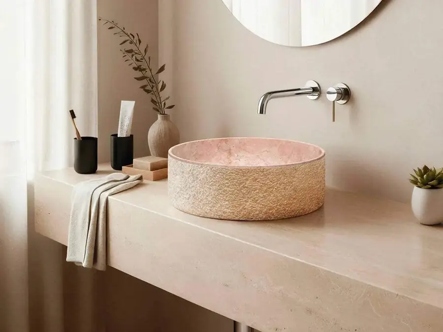
LavabosLa mayoría de los lavabos podrían intercambiarse entre sí y nadie lo notaría
Cualquier lavabo de catálogo se parece a otro. Detrás de la ruptura con esa norma está Bathco, con su colección Classic.
Cada pieza nace de la belleza natural de la piedra. Cuatro formas —Bowl, Circular, Cuadrado y Rectangular— y acabados naturales, con variaciones de color, veta y textura que hacen que ningún lavabo sea igual a otro.

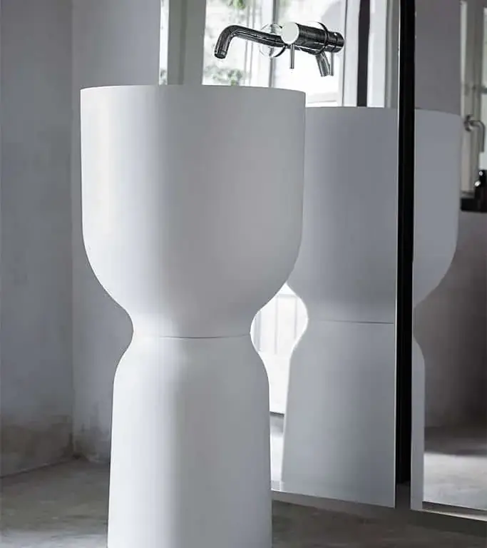
LavabosUn bloque de mármol tallado a mano convertido en lavabo
Hay piezas que no necesitan contexto para funcionar. Se colocan y el espacio se organiza a su alrededor.
Origin85 Freestanding de Inbani es exactamente eso.
Tallado artesanalmente a partir de un único bloque de mármol, con proporciones equilibradas y una depuración formal que pone en valor la materia por encima de cualquier otro argumento.
Disponible en Carrara, con su luminosidad característica, o en Marquina, de carácter más rotundo y envolvente.
 Lavabos
LavabosNuevos colores UHS Brillo (lavabos y bañeras) – Inbani
UHS Brillo amplía la gama de revestimientos de Inbani con un acabado brillante disponible en 60 colores, manteniendo las mismas prestaciones técnicas del UHS mate.
Conserva la alta resistencia a impactos, rayados, agentes químicos y humedad, ahora con una dureza superficial mejorada para lavabos, bañeras y encimeras.
El brillo intensifica el color y aporta mayor luminosidad al espacio, permitiendo trabajar cada pieza como un elemento protagonista.
Una única carta cromática en dos acabados que aumenta la versatilidad creativa en proyectos de baño contemporáneos.
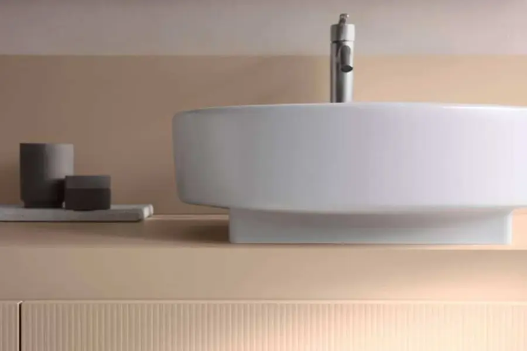
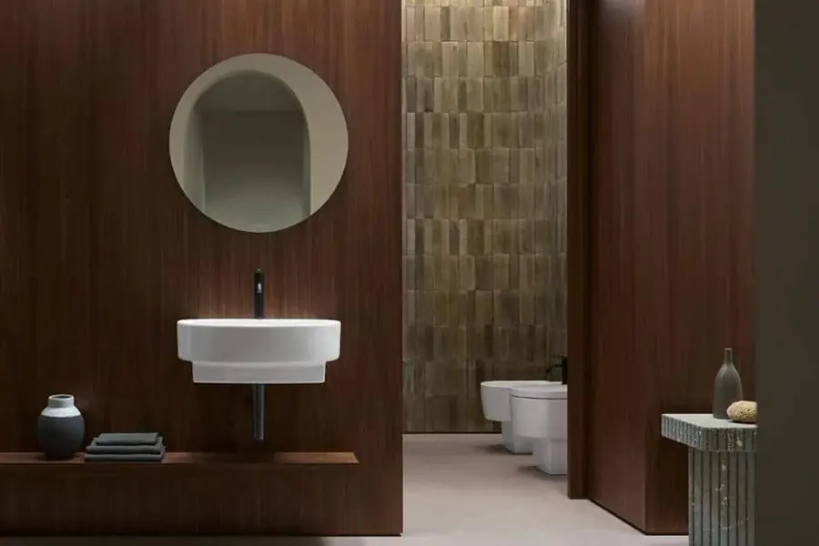
LavabosLavabos personalizables Balcoon – Duravit
Los lavabos Balcoon permiten trabajar el baño como un conjunto arquitectónico premium coherente gracias a su amplia capacidad de personalización.
Las distintas geometrías y los tres colores —incluido el nuevo Arcilla Terra Mate, con una lectura más artesanal— facilitan ajustar la pieza a paletas cálidas y materiales naturales.
El vitrificado DuraShield® aporta resistencia y estabilidad higiénica, algo clave en viviendas de uso intensivo.
Su diseño, firmado por Patricia Urquiola, combina líneas puras con una presencia amable que encaja bien en baños contemporáneos donde se busca identidad sin estridencias.
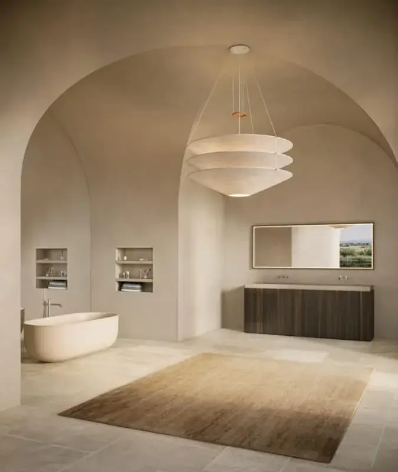
LavabosHay baños que necesitan un eje sólido, no solo mobiliario.
Un mueble ligero, por bonito que sea, no siempre aporta jerarquía cuando el espacio es amplio.
Ahí funciona Scala, el nuevo sistema de módulos al suelo de Inbani: puertas en madera de eucalipto Fumé 610, encimera en mármol beige, y grifería empotrada a pared para despejar el plano de piedra.
Si necesitas gran capacidad y una estética rotunda, lo vemos juntos.
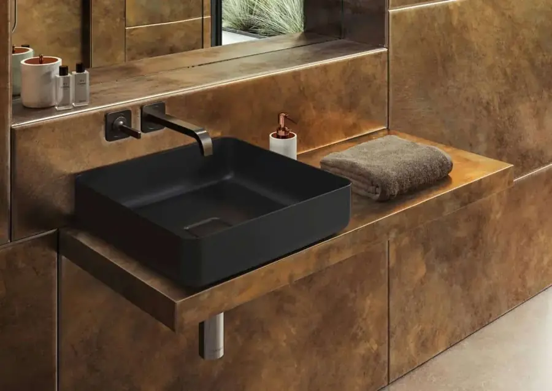
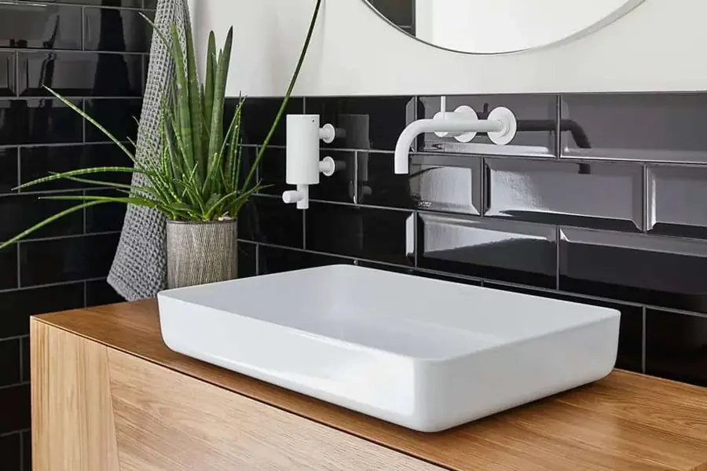
Lavabos¿Cuánto pesa la coherencia entre un lavabo y el resto de piezas del baño?
Elegir el lavabo por separado suele romper la lectura del conjunto.
Anke Salomon lo pensó como parte de un todo al diseñar Miena Bowl para Kaldewei: acero vitrificado que se integra con bañeras y platos de ducha del mismo ecosistema, disponible también en edición limitada nature protect, con huella de carbono reducida.
Te mostramos el ecosistema completo si buscas esa continuidad de material.
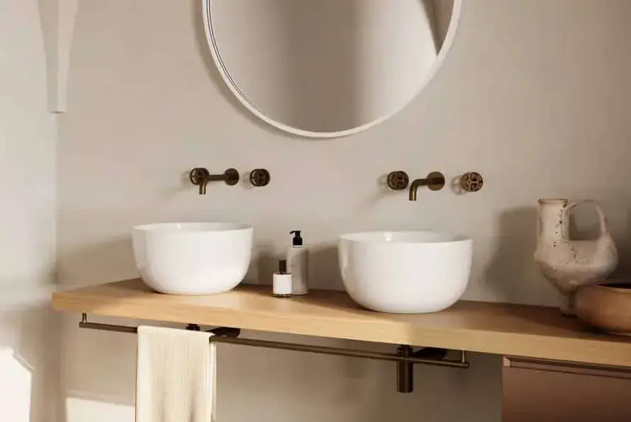
LavabosLavabos para baño Sfera – Catalano
Catalano renueva su icónica colección de lavabos para baño Sfera. Una apuesta por la sencillez y concavidad.
Incorpora versiones suspendidas con repisas laterales útiles, compatibles también con instalación sobre mueble, y tipologías ovaladas y circulares en formatos de encastre, bajo encimera y sobre encimera.
Esta variedad permite resolver baños en proyectos transversales, con un mismo lenguaje, optimizando ergonomía, limpieza y facilitando además la sustitución y el mantenimiento en obra.
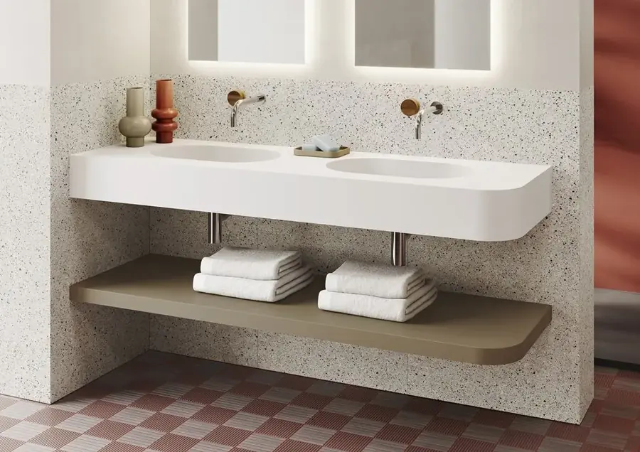
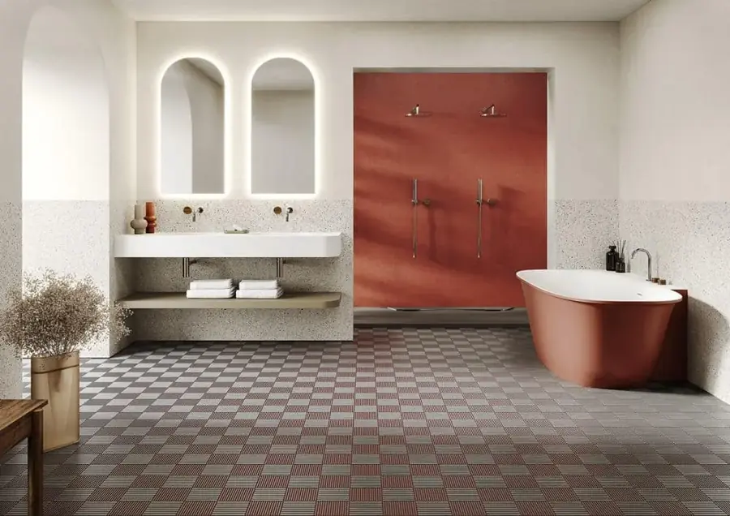
LavabosColección de lavabos Program Curve – Hidrobox
La colección Program Curve amplía sus posibilidades con nuevas geometrías curvas que permiten diseñar lavabos totalmente a medida.
Con 25 modelos de seno y 9 configuraciones base, facilita ajustar proporciones, dimensiones y ergonomía a cada proyecto.
Fabricados en material compacto, admiten la integración de toalleros, paneles y accesorios. Una propuesta para proyectos personalizados que valoran la libertad compositiva y la funcionalidad.
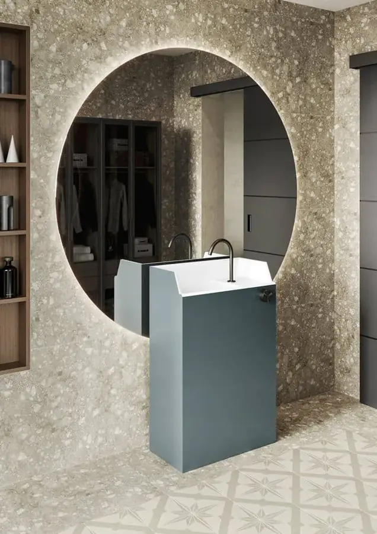
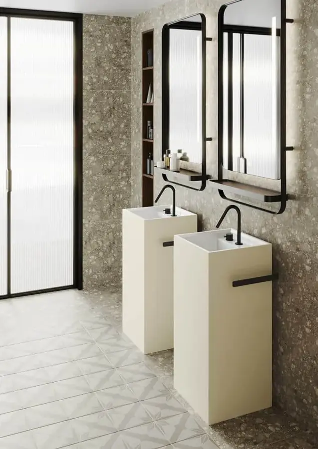
LavabosColección de lavabos para baño FS 24, 25 y 26 - Hidrobox
Lavabos freestanding concebidos como auténticas piezas escultóricas que definen el baño.
Los nuevos modelos FS24, FS25 y FS26 se suman a la colección, incorporando soluciones funcionales como copetes traseros que ocultan la grifería, toalleros integrados y cantos biselados que mejoran la ergonomía.
Una colección ideal para baños residenciales y hoteleros de alta gama que buscan presencia, funcionalidad y distinción.
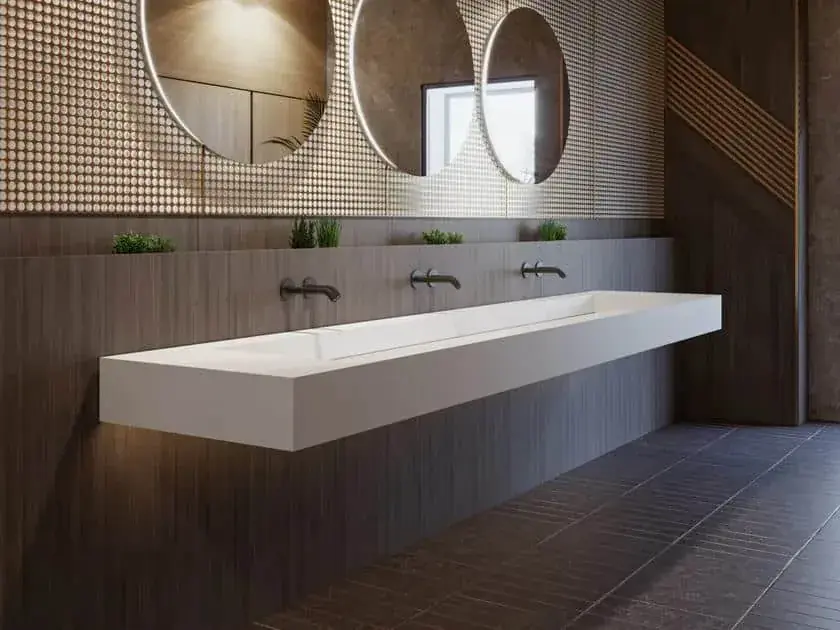
LavabosLavabo para baños comerciales Titan – Hidrobox
Titan se presenta como un lavabo de gran formato pensado para espacios de uso intensivo donde se requiere capacidad, robustez y libertad de implantación.
Sus formatos longitudinales permiten configuraciones continuas sin fijación a pared, facilitando la adaptación a distintas distribuciones, griferías y demás accesorios.
Fabricados en solid surface Scene®, ofrece alta resistencia, superficie no porosa y fácil mantenimiento.
Una solución eficaz que mejora la circulación para proyectos accesibles, o espacios con gran afluencia de uso (públicos y privados).
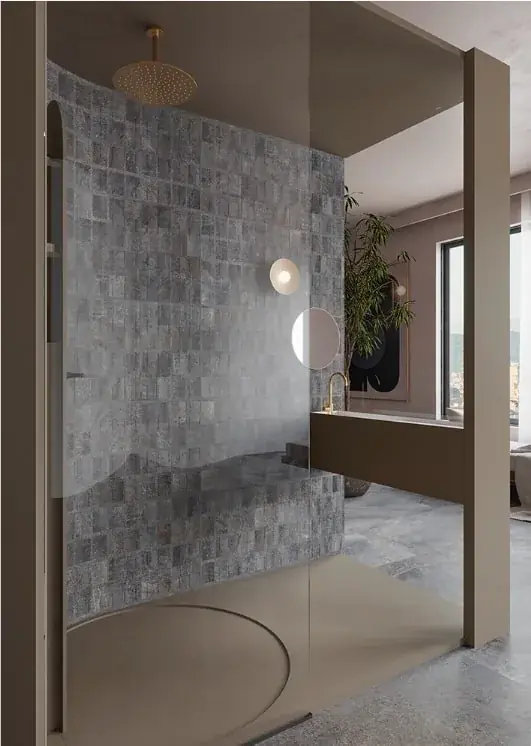
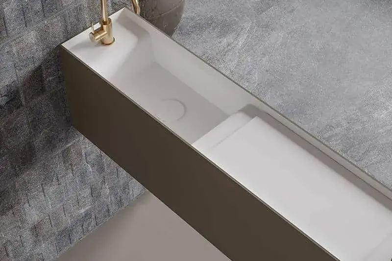
LavabosLavabo auxiliar para baño Soul – Hidrobox
Lavabo auxiliar diseñado para integrarse en soluciones de baño donde se requiere apoyo funcional adicional sin restar espacio.
Fabricado en Scene®, material con alta resistencia al impacto, abrasión y humedad, ofrece una superficie homogénea y de fácil mantenimiento.
Disponible en versiones izquierda (L) y derecha (R) en 22×100×20/30 cm, incorpora almacenamiento oculto bajo tapa que optimiza la organización sin comprometer la limpieza visual.
Se ofrece en blanco puro y colores Plus, facilitando su integración cromática en todo tipo de baños.
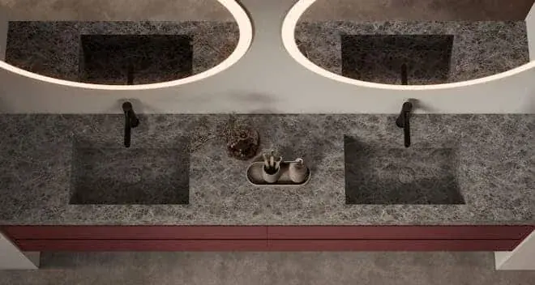
LavabosLavabo EROS con cuenco integrado - Kyrya
Lavabo fabricado en Pivsolid, material mineral sólido que garantiza resistencia y fácil mantenimiento.
Disponible en toda la gama cromática y texturas del catálogo, permite configurar el baño a conjunto del resto de mobiliario.
Su cuenco integrado incorpora válvula a juego con sistema fijo y clicker incluidos. Fabricado en una sola pieza, ofrece continuidad visual.
Disponible en varias dimensiones y configuraciones, Eros se adapta a proyectos que priorizan durabilidad y personalización cromática.
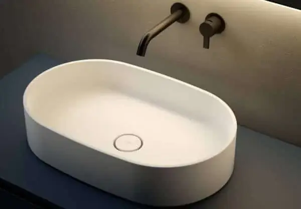
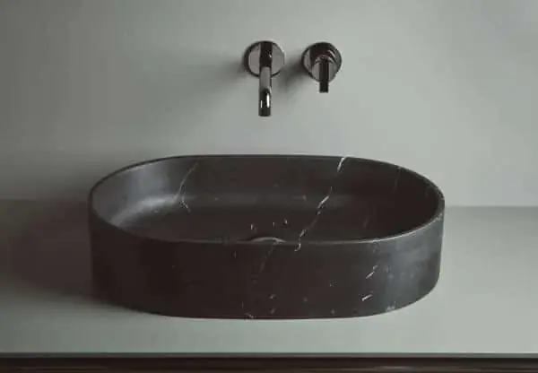
LavabosLavabos cilíndricos pedestal. Colección Giro - Inbani
Colección de lavabos cilíndricos en formato pedestal disponibles en solidsurface o mármol natural.
Los modelos incorporan detalles metálicos y accesorios como toallero integrado o grifería monomando, reforzando la funcionalidad sin perder diseño.
Con acabados en mate y amplia paleta UHS o hasta siete variedades de mármol, la línea ofrece múltiples configuraciones.
Una propuesta versátil y de materiales nobles, pensada para baños residenciales y proyectos exigentes que buscan diferenciación.
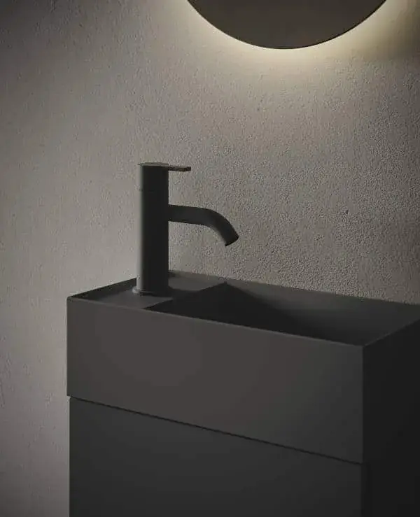
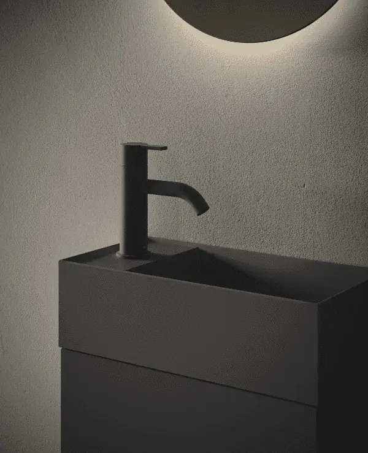
LavabosColección Facett y Code monocolor para baños pequeños - Inbani
Colección diseñada para baños pequeños o de cortesía, optimizando el espacio sin comprometer su diseño ni funcionalidad.
Sus dimensiones permiten una integración completa en los rincones más desaprovechados. Una solución práctica para proyectos que busquen sacar partido a espacios reducidos.
Grifos y lavabos en formatos compactos y monocolor, permitiendo crear composiciones que aportan continuidad visual.
Como novedad, amplía su gama de colores con Dune y Forest. Dos tonalidades inspiradas en los colores que la naturaleza nos brinda.
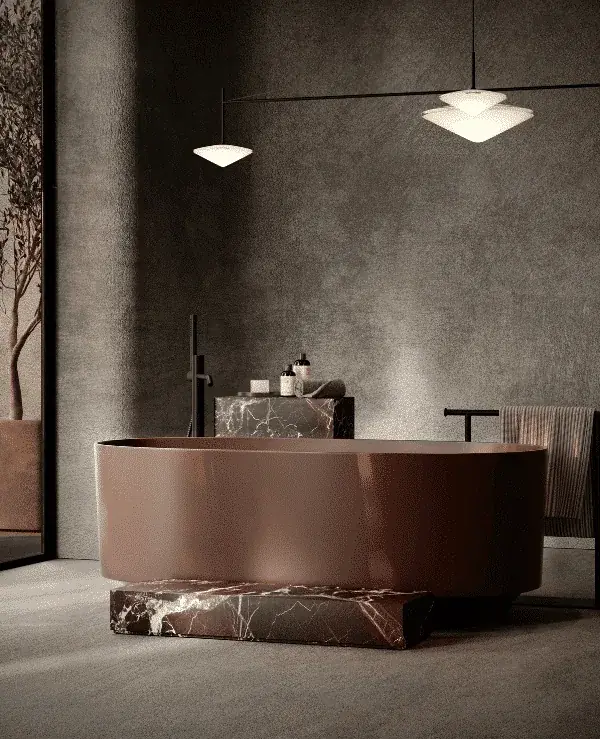
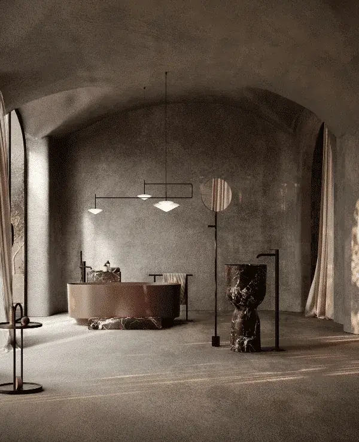
LavabosLavabo Origin85 freestanding – Inbani
Lavabo con estructura autoportante de 85cm de altura y base sólida en mármol Rossoo Lepanto. Una pieza escultórica atemporal y de gran durabilidad.
Su formato independiente facilita la instalación en baños residenciales, creando un punto focal sin necesidad de obra completa en proyectos de alto nivel estético.
Caracterizado por el color rojizo de sus vetas, Origin85 consigue crear una atmósfera sofisticada y armoniosa complementándose con el resto de accesorios de la colección en negro mate.
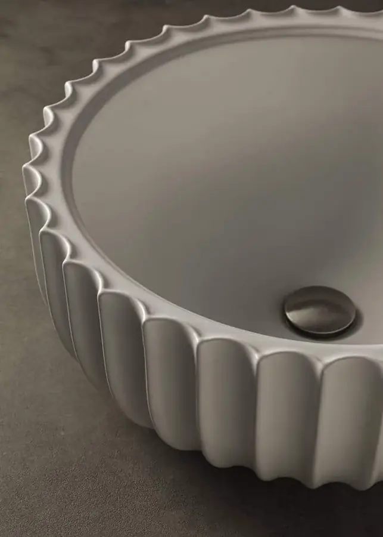
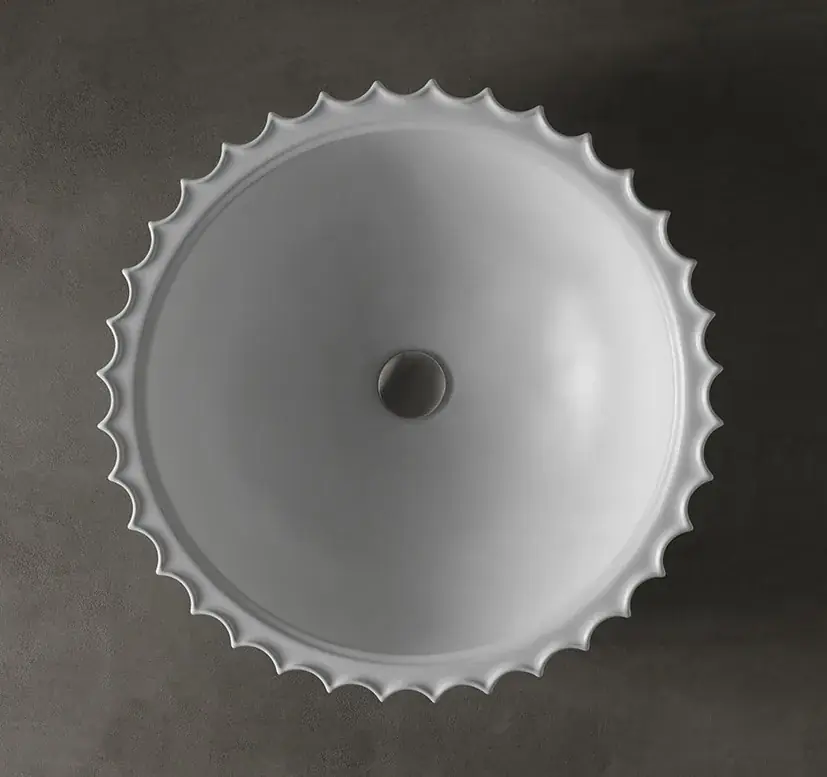
LavabosLavabos en cerámica Settecento – Flaminia
Nueva línea de lavabos diseñada por Giulio Cappellini para Fliminia.
Una colección en cerámica inspirada en las pilas de agua de las iglesias barrocas, con versión sobre encimera (en dos tamaños), sobre pedestal y exenta (con desagüe en suelo o pared).
Opción ideal para proyectos con una estética clásica y atemporal, que busquen piezas de grandes dimensiones, con carácter y personalidad.
“Settecento” está disponible en todas las tonalidades que ofrece la paleta Flaminia.
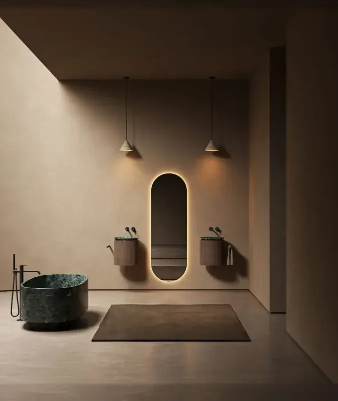
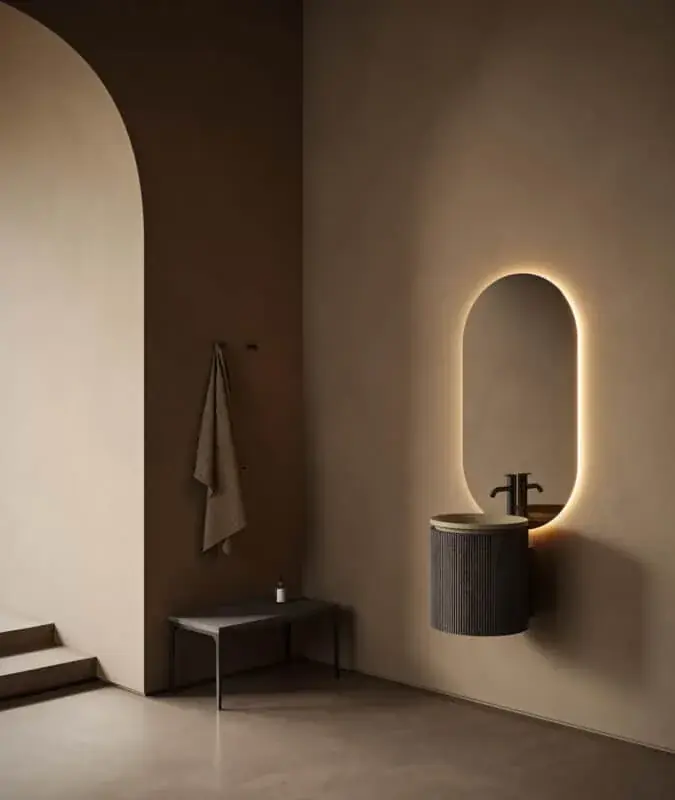
LavabosLavabo suspendido Grate Round – Inbani
Lavabo cilíndrico suspendido de 40cm diseñado por Norm Architects.
GrateRound 40 se presenta en acabado UHS Avena 232 o Solid Surface, con columna ranurada en madera S3 555 Grey Wild Oak.
Customización con más de siete mármoles y ocho tonalidades de madera disponibles. Permite complementarse con otros elementos como el toallero EDGE, espejo STRATO ovalado con LED y grifo monomando CODE H31.
Su relieve lineal genera ritmo visual y textura. Ideal para proyectos de alta gama que buscan una materialidad protagonista.
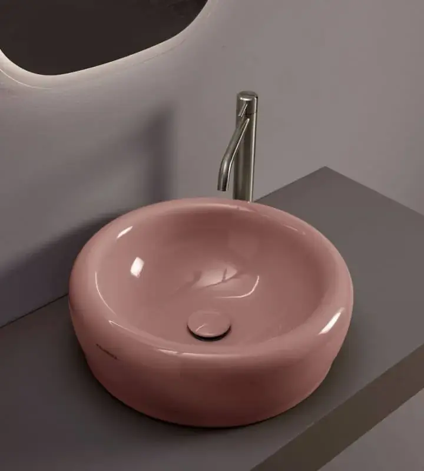
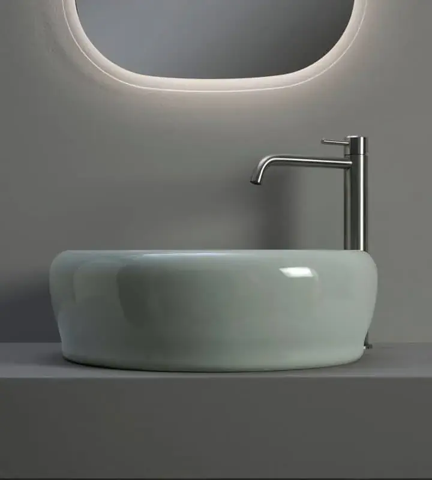
LavabosLavabo para baño Siena – Flaminia
Lavabo sobre encimera de 46cm sin rebosadero, diseñado por el joven indio Gupta para Flaminia.
Inspirado en el relieve ondulado de la Toscana, un diseño presenta líneas suaves y fluidas que transmiten equilibrio visual.
“Siena” está fabricado en cerámica de alta calidad y disponible en una gama amplia de tonalidades empolvadas como verde menta, rosa talco, terracotta, argila, blancos y grises.
La diversidad en acabados facilita su integración en múltiples proyectos y lenguajes interioristas.
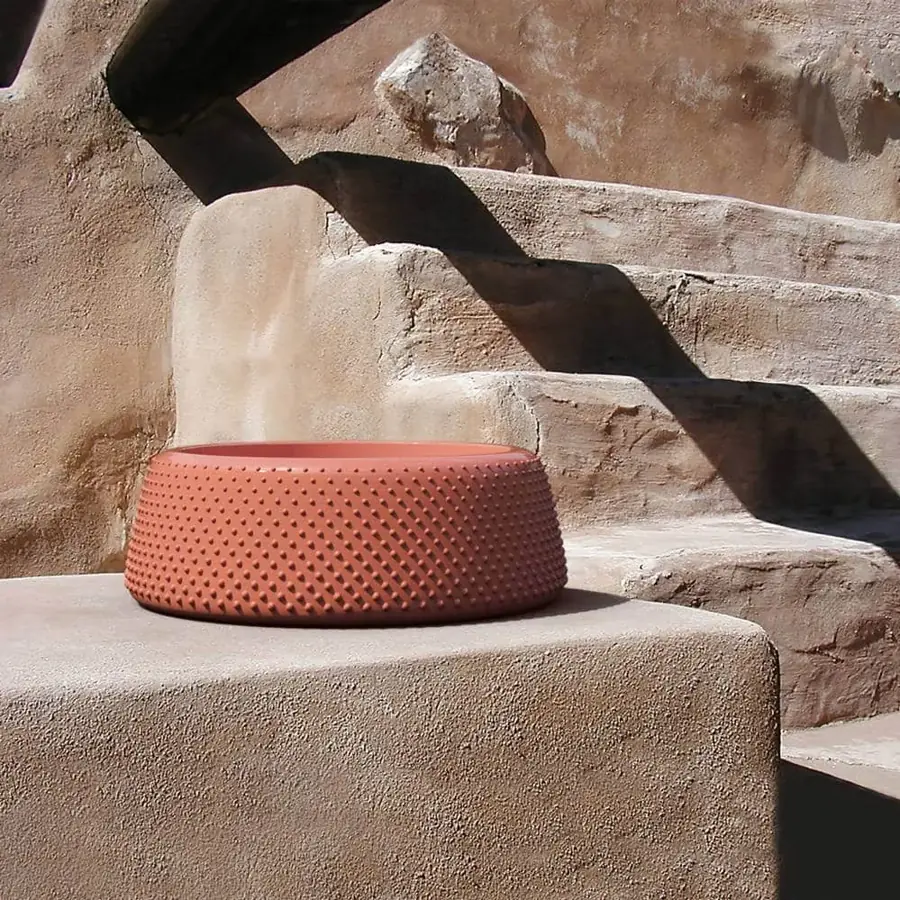
LavabosLavabo para el cuarto de baño Falala – Flaminia
Lavabo de encimera diseñado por Elena Salmistraro para Flaminia. Una pieza hecha en cerámica de altas calidades que recuerda a las típicas cestas africanas.
Su textura punteada tridimensional, aporta carácter escultórico y convierte el uso diario en una experiencia sensorial.
Falala está disponible en varias tonalidades mates y brillantes. La colección también incluye el acabado especial Crystal, que genera un original contraste lumínico.
Una pieza diseñada para proyectos que buscan identidad visual sin renunciar a prestaciones técnicas y practicidad en su uso diario.
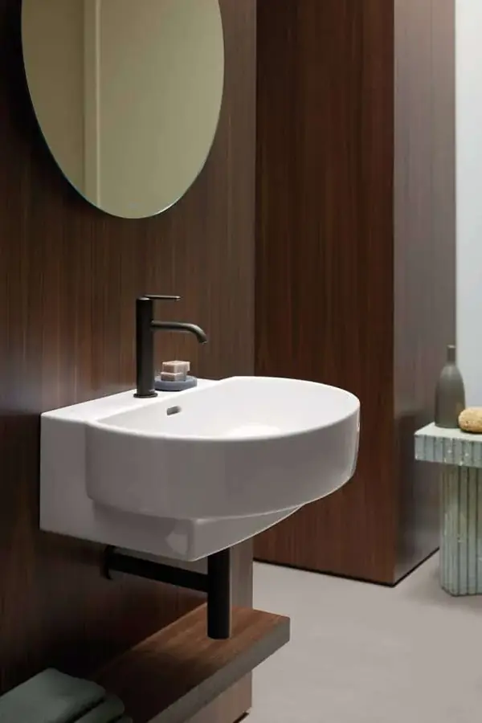
 Lavabos
LavabosLavabos Balcoon – Duravit
Los lavabos Balcoon están disponibles en versiones suspendidas (550, 600 y 650mm) o sobre encimera (450mm en formatos redondo y 550mm ovalados).
Fabricados en cerámica con esmalte protector DuraShield®, garantizan una limpieza sencilla y máxima higiene para la estancia, incluyendo con garantía de por vida.
Gracias a esta propiedad, su superficie lisa y casi sin poros evita la acumulación de suciedad y neutraliza el 99,99 % de bacterias en 24 h.
Colores como blanco, blanco satinado mate o Arcilla Terra mate refuerzan su estética natural.
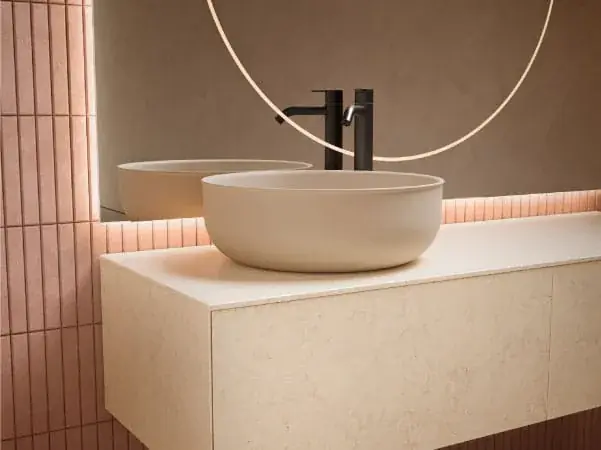
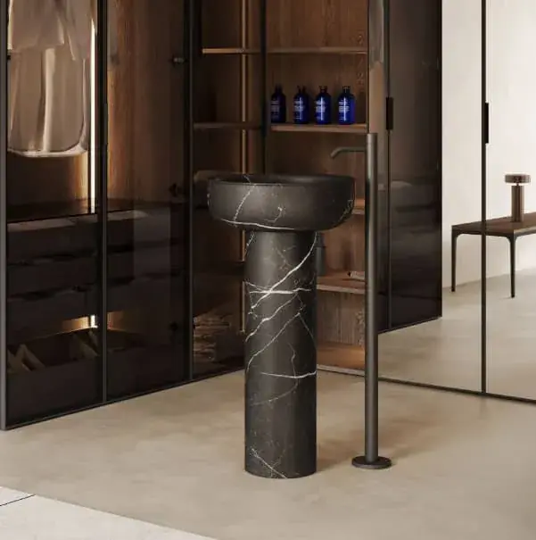
LavabosLavabos Prime – Inbani
Prime de Inbani es la nueva colección de lavabos que nace para satisfacer las necesidades más esenciales, sin renunciar al diseño y a la elegancia.
Con grandes referencias a la funcionalidad escandinava, cada pieza consigue el perfecto equilibrio entre forma y utilidad. Una estética atemporal que gracias a sus materiales se convierte en una inversión duradera.
Disponibles en una amplia gama de acabados en mármol, todos ellos han sido meticulosamente seleccionados buscando la sencillez más exclusiva.
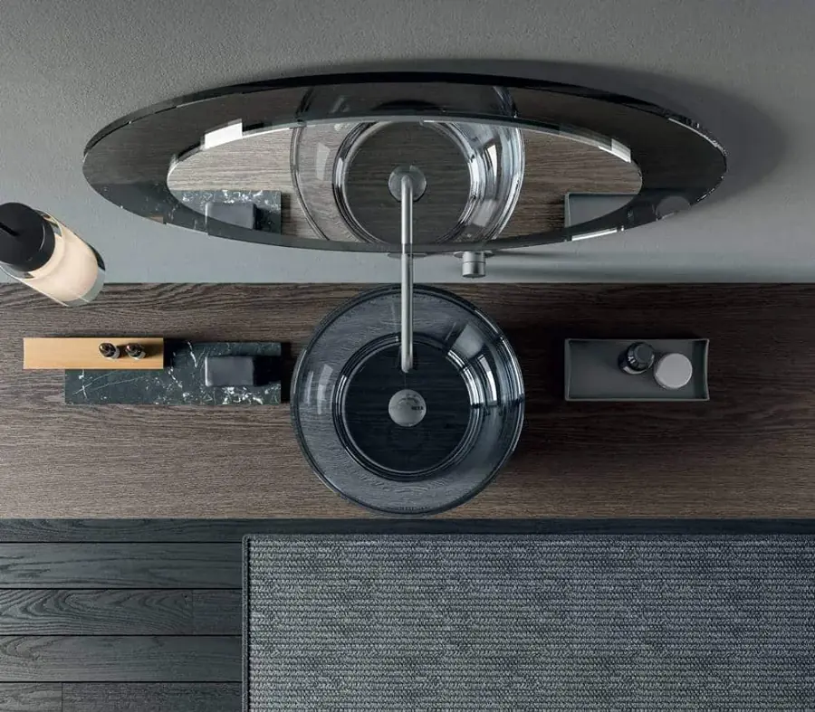
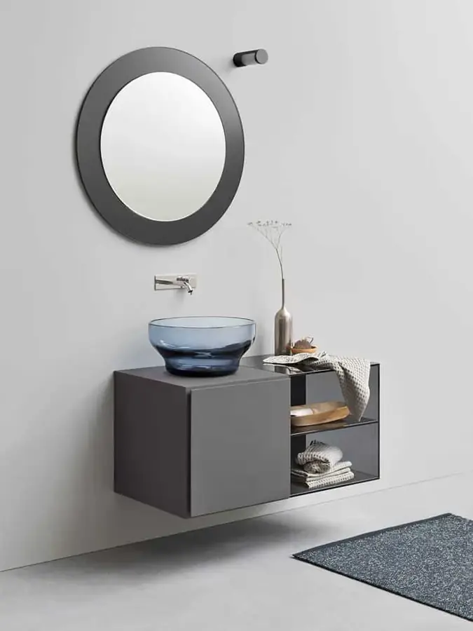
LavabosLavabo de cristal de Murano – Rexa Design
La empresa italiana de mobiliario de baño reinterpreta la tradición de los maestros vidrieros para dar forma a su nuevo lavabo de cristal de Murano.
Creado mediante la técnica tradicional de soplado a boca, las variaciones de grosor en su forma, que provocan las burbujas de aire, le aportan un carácter único y artesano. Una auténtica joya con la que dar un toque exclusivo y sofisticado a cualquier baño.
Disponibles en tono bronce y grisáceo, los lavabos de Rexa Design son un auténtico homenaje a la tradición veneciana.
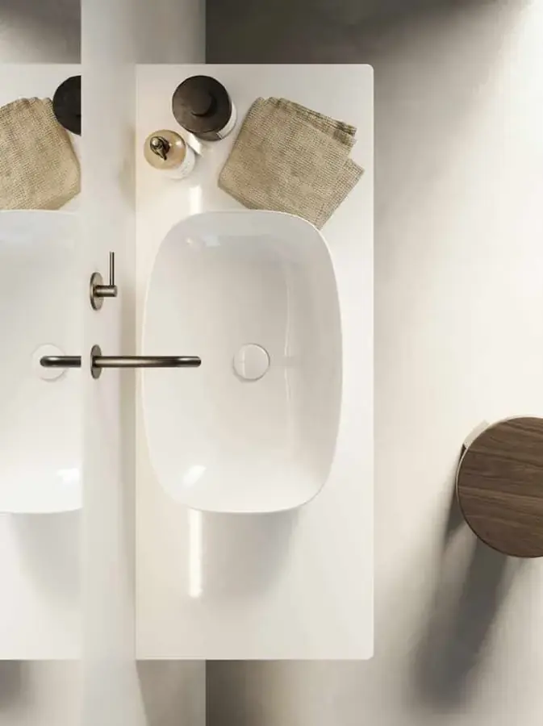
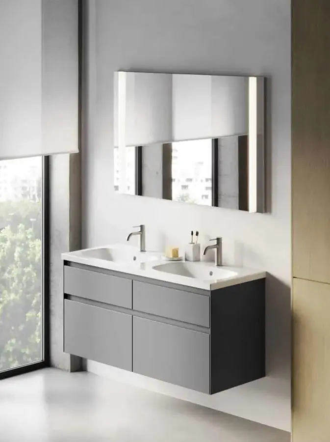
LavabosColección de Lavabos para baños Alvea – Catalano
Catalano presenta su nueva colección para baño “Alvea”, una invitación a sumergirse en un mundo de suavidad y elegancia. Las líneas suavizadas de sus acabados y los tonos satinados de sus diseños, inspirados en la naturaleza, aportan un ambiente acogedor a la estancia.
Cada pieza ha sido diseñada para transformar tu baño en un oasis de bienestar, donde la funcionalidad se une a la estética: sus modelos integran la avanzada tecnología antibacteriana Cataglaze+ y el sistema de descarga Silentech, garantizando la mejor higiene y operatividad.
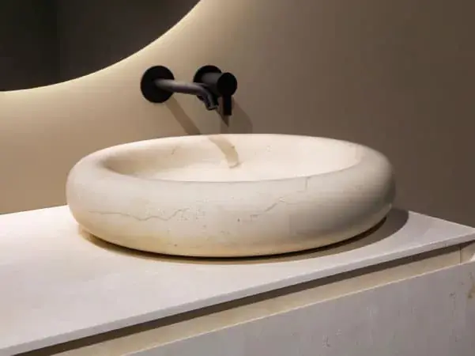
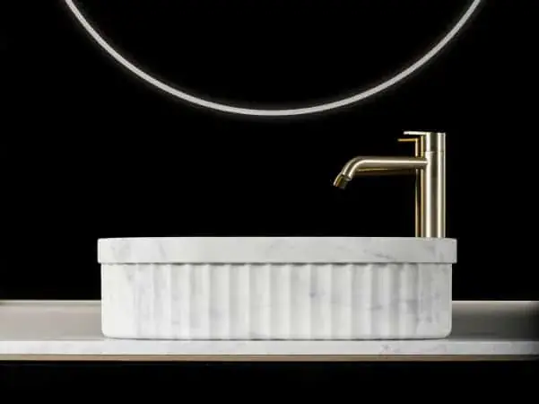
LavabosLavabos en mármol – Inbani
Si algo caracteriza a los lavabos de Inbani es el uso del mármol como material protagonista. Un mármol de alta calidad, en acabados blanco Carrara, negro Marquina, Pietra Grey y Beige.
La marca de referencia presenta su última colección, con piezas super especiales talladas a mano a partir de un único bloque. Detalle que garantiza la exclusividad y autenticidad de cada lavabo debido a las variaciones naturales en las vetas y tonalidades del material.
Este enfoque artesanal hace que cada lavabo sea una obra única, combinando tradición y elegancia atemporal en cualquier espacio de baño.
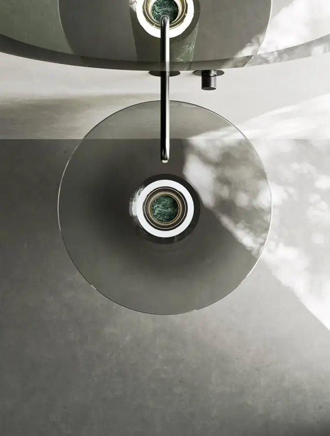
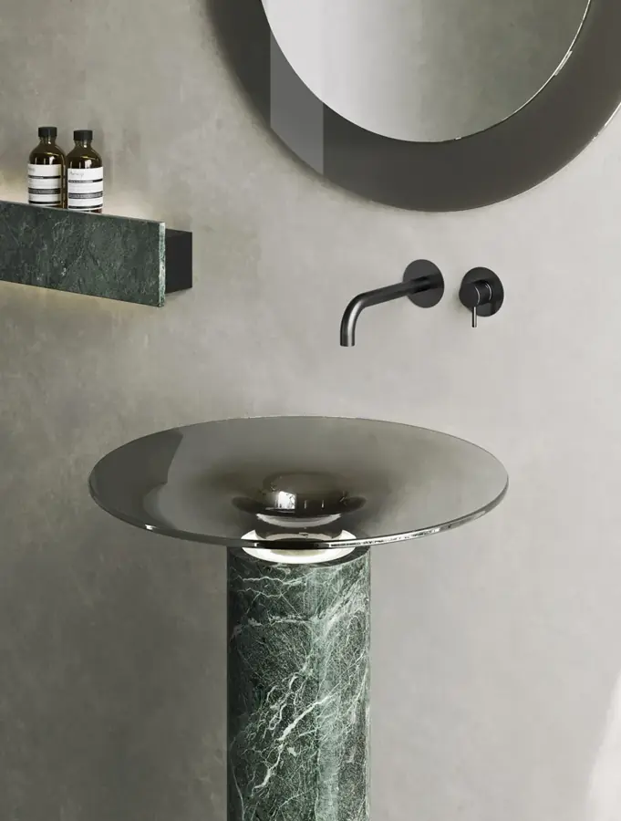
LavabosLavabo Pure – Rexa Design
Rexa Design convierte tu rutina de baño en un momento especial con su nuevo lavabo. Disponible en mármol Rosso, Negro, Verde y Blano, la pieza diseñada por Studio Batoni es la pura representación de la fusión entre estética y funcionalidad.
Formas superpuestas que se integran, volúmenes en armonía que crean un conjunto visualmente impactante, iluminación LED que aporta un aura al espacio de sofisticación y serenidad.
Una obra de arte atemporal, resultado de la perfecta conexión entre columna y lavabo. El toque de distinción para elevar cualquier baño.
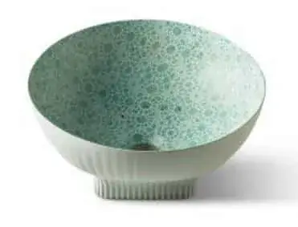
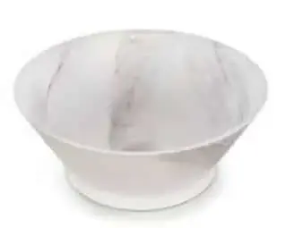
LavabosLavabo de diseño Dobra - Bathco
Bathco revoluciona el mundo de los lavabos con su propuesta más especial, la serie Dobra. Inspirada en la silueta de las hojas del Gingko biloba, uno de los árboles más antiguos del mundo.
Con detalles en su diseño que imitan las frágiles ramificaciones de nervios de sus hojas, y la imponente forma natural de estas hojas, los lavabos de esta colección son pura elegancia resultado de una mezcla estética ancestral y moderna.
Sus exclusivas piezas están disponibles en tres versiones: turquesa, chocolate/oro y negro envejecido.
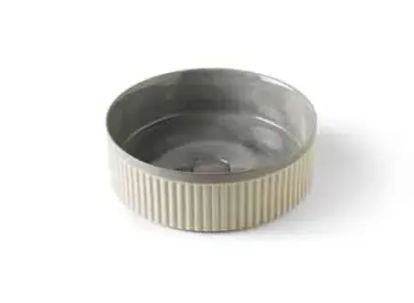
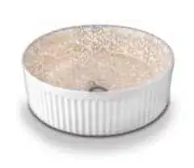
LavabosLavabos Wadi - Bathco
Bathco sorprende con su gama de lavabos porcelánicos “Wadi”. La colección redefine la elegancia clásica combinándola con un toque de sofisticación y detalles modernos.
Con referencias directas a las antiguas columnas griegas, la nueva serie ofrece piezas en formato circular y ovalados con pinceladas de color. Piezas que destacan por su genuino diseño y la variedad de acabados disponibles.
Fruto de esta versatilidad, Wadi se integra fácilmente en distintos estilos de decoración, proporcionando un aire de distinción y modernidad a cualquier baño.
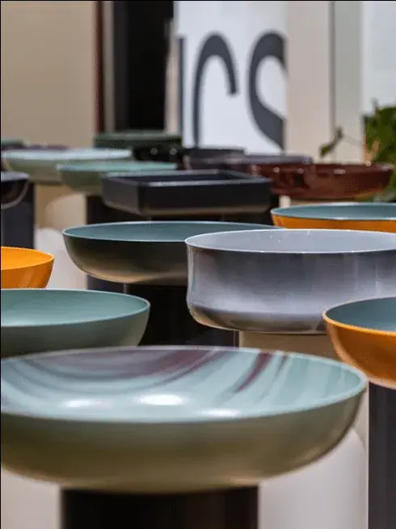
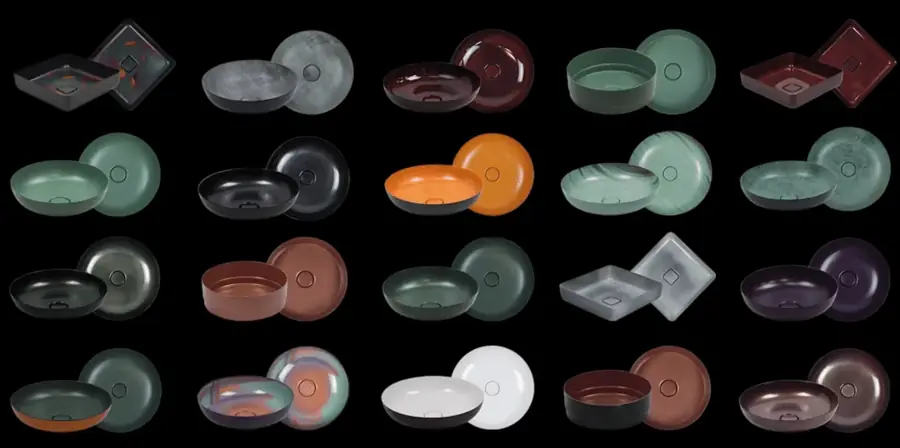
LavabosLavabos de acero vitrificado Be Unique - Kaldewei
Descubre la colección de lavabos Be Unique de Kaldewei, una colección que redefine la elegancia y comodidad en el baño destacando por su sofisticada estética.
Con esta innovación, la marca se posiciona como referente en diseño con sus modelos en colores genuinos como el profundo Deep Greenery o el vibrante Ruby Rouge. Desde opciones bicolores hasta acabados metálicos y diseños decorativos excepcionales.
Los lavabos de Kaldewei son la elección de quienes buscan lo excepcional. Exhiben un estilo extravagante sin comprometer las cualidades probadas del acero vitrificado. Un material que eleva los estándares de calidad.
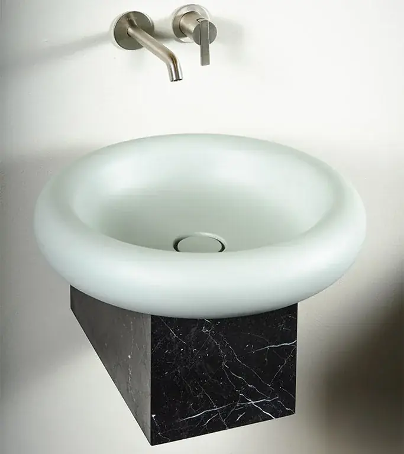
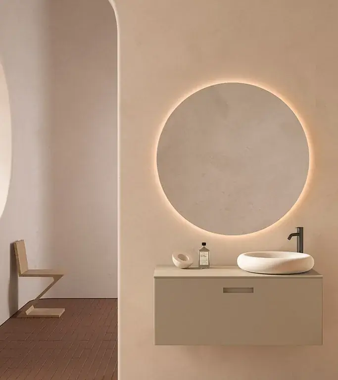
LavabosLavabo Ease48 – Inbani
Experimenta la fusión perfecta de sencillez y comodidad con el modelo de Lavabo Ease48 de la colección de Inbani.
La marca de referencia en diseño e innovación, presenta una línea de elementos para baños muy versátiles y combinables entre ellos con un denominador común, su distinguido diseño.
El lavabo presenta varias opciones en cuanto a configuraciones y materiales: disponible en Solidsurface, UHS (60 colores) o Marble (en tonos beige, blanco Carrara, Negro Marquina y Gris Pietra). En esta misma línea, la pieza puede complementarse colocándose sobre una columna de la misma gama, una encimera o un mueble.
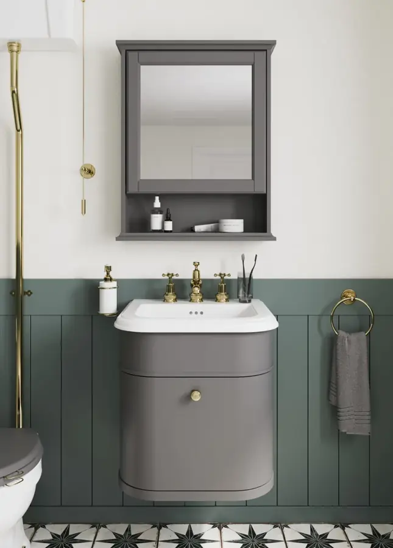
LavabosLavabo cerámico Chalfont – Burlington
Descubre el nuevo lavabo cerámico para baños de la colección Chalfont de Burlington. Una fusión sorprendente que consigue que lo tradicional conviva con lo contemporáneo sumando valor estético a la pieza.
El elegante mueble tocador está disponible en 3 modelos distintos diferenciados por el acabado de sus patas: en color negro mate, nikel o cromadas.
En estos tiempos en los que diferenciarse se convierte en algo imposible, y si te fascina el diseño de interiores, la opción de Burlington es ideal para dotar de carácter e individualidad a cualquier baño.
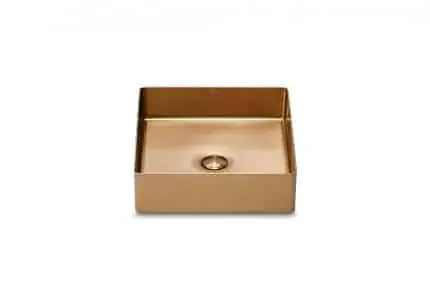
LavabosLavabos en Acero Inoxidable Detroit - Bathco
Descubre los nuevos modelos de la colección Detroit en Acero Inoxidable de Bathco. La marca enriquece su catálogo con estos cuatro modelos innovadores: oval, pedestal, alto y de pared.
Con acabados en acero cepillado, Gun metal y bronce, estos lavabos fusionan funcionalidad con sofisticación, abrazando la tendencia del metal en la ambientación de espacios.
Ya sea para diseños contemporáneos o entornos más clásicos, los lavabos de acero inoxidable de Detroit son la solución perfecta, reiterando el compromiso de Bathco con la calidad y la excelencia estética para los amantes del interiorismo moderno.
- Lavabos
Lavabos Plisse – Artelinea
Artelinea plasma su pasión por el diseño en su nueva línea de Lavabos Plisse. Como si de un museo se tratara, la inédita línea de muebles para baño ofrece auténticas piezas de colección.
Lavabos verticales en forma de tótems fabricados en vidrio y con detalles metálicos que aportan sofisticación, armonía y exuberancia. Las líneas que definen el carácter de la colección, con acabados plisados, refuerzan la concepción de sus modelos como genuinas expresiones artísticas.
Plisse está disponible en infinitos tonos, potenciando la originalidad de aquél que apueste por incluirlo en su baño.
- Lavabos
Lavabos sobre encimera y freestanding - Inbani
La exclusiva marca de muebles para baño Inbani ofrece auténticas piezas decorativas que, además de dotar de personalidad y armonía al baño, aseguran el máximo confort y practicidad en su uso.
Entre su amplia colección destacan los lavabos por su gran variedad y su cuidada estética. La marca ofrece dos tipologías distintas, los que van sobre encimera y los conocidos como “freestanding”.
Aunque conservando su estilo con tonalidades suaves y formas redondeadas, cada modelo tiene sus propias particularidades: mientras que los lavabos sobre encimera resultan más cómodos por su facilidad de instalación y mantenimiento, los de tipo “freestanding” ocupan menos espacio y convierten el baño en un lugar especial y minimalista.
- Lavabos
Lavabos y bañeras Antao – Villeroy&Boch
“La naturaleza hecha baño”. Así se define la nueva colección de lavabos y bañeras Antao de la mano de Villeroy&Boch. Un concepto que encuentra su inspiración en las formas y tonos que la naturaleza nos brinda.
Diseñada con materiales de primera calidad, la cerámica de sus piezas consigue aportar la robustez adecuada y, junto a los diferentes acabados en piedra y madera, la colección se equilibra transmitiendo suavidad y calma.
Antao es sinónimo de elegancia y paz. Sensaciones que alimentan los tonos en los que podemos encontrarla. Tonos naturales que aportan un estilo orgánico a la colección además de transmitir armonía a este espacio tan holístico.
- Lavabos
Lavabos y bañeras de diseño italiano I Catini – Cerámica Cielo
Cerámica Cielo transporta la esencia del saber hacer italiano a su nueva colección I Catini de lavabos y bañeras para aseos.
La marca introduce la cultura italiana en la forma y expresión de sus piezas. Se percibe en la selección de los materiales, como la cerámica, el cuidado por el diseño, la pasión por el detalle y los acabados “homemade”.
La colección se presenta en tres variantes Redondo, Ovalado y Doble o Rectangular. Todas comparten la comodidad y funcionalidad en su estética. Un equilibrio perfecto entre eficiencia higiénica y diseño.
- Lavabos
Lavabos sobre encimera personalizables - Duravit
Duravit presenta su gama de lavabos para el baño más versátil. Lavabos sobre encimera que permiten llevar la personalización de la estancia al máximo nivel.
Además de la diversidad en tonalidades, la combinación de materiales y texturas entre elementos hace que cada pieza sea única y especial. Muebles con madera, fundición mineral o incluso piedra natural, que se mezclan con la cerámica de la encimera.
Infinidad de opciones que se adaptan a cualquier necesidad estructural. La calidad que avala a la marca permite que la zona de aseo, además de creativa y original, sea funcional en el día a día.
- Lavabos
Lavabo para baño Heritage – Inbani
Inbani presenta una de sus novedades más especiales, el Lavabo Heritatge50 (HG004) acabado UHS en Ivory-182, sobre una estructura con patas que incluye un estante en Negro Mate (HG005).
Una pieza única de la colección Heritage diseñada por el internacionalmente reconocido Patrick Norguet. Con gran influencia y gusto por el diseño gráfico, sus obras son atemporales y, sobre todo, buscan la practicidad en su uso.
La colección, inspirada en la arquitectura griega, se compone de varias piezas monolíticas con ranuras verticales que recuerdan a las antiguas columnas. Su característica forma aporta ritmo, a la vez que elegancia y sensualidad.
- Lavabos
Lavabos de baño Antao – Villeroy&Boch
De la mano de los reconocidos diseñadores Kaschkasch, Villeroy&Boch presenta su colección de lavabos más holística, “Antao”.
La colección ofrece un conjunto de piezas de baño, combinables entre ellas, inspirada en las formas y colores que la naturaleza nos brinda.
Piezas hechas a partir de materiales naturales, en varias medidas y tonalidades, que se comportan como auténticas obras de arte, respondiendo a las necesidades de cualquier baño: lavabos, muebles de almacenamiento, inodoros, bañeras, platos de ducha…
Una colección en la que cada elemento respira esta esencia orgánica, tan palpable en su diseño, que permite construir una atmósfera común en armonía y consonancia.
- Lavabos
Lavabos para el baño Delfo – Cielo Ceramicas
Cielo Cerámicas apuesta por Delfo. Un diseño de lavabo que nace de la inspiración de Andrea Parisio y Giuseppe Pezzano.
A medio camino entre lo de siempre y las últimas tendencias, Delfo trabaja materiales como la cerámica y la madera. Con gran influencia en la alta artesanía, pero tratados desde la innovación y la contemporaneidad.
Su composición determina el carácter que transmite esta colección, un equilibrio perfecto entre sutileza y robustez que juega a los contrastes con delicadeza.
Esta combinación de elementos contrapuestos es precisamente la que define su diseño, donde la elegancia y la emoción están presentes en cada detalle.
- Lavabos
Lavabo de baño Ease – Inbani
Ease nace con la premisa de lograr el equilibrio perfecto entre funcionalidad y distinción.
Su nueva colección, de la mano de Note Design Studio, consigue enamorar a los amantes de la sencillez y la naturalidad.
Una colección donde destacan las formas básicas, haciendo contraste entre sí, con formas planas y uniformes, y una selección de materiales suaves que invitan a relajarse en este espacio.
Adaptándose a nuestra vida cotidiana, el baño Ease es la mejor opción cuando se trata de construir un rincón acogedor y con coherencia estética, a la vez que cómodo y práctico para el día a día.
- Lavabos
Lavabos de sobremesa ergonómicos Velis - Catalano
La colección Velis de Catalano se amplía con dos nuevos lavabos de sobremesa, con diseño ergonómico y funcional, y un nuevo borde más fino y redondeado. También incluye un inodoro y bidet con diseño actualizado.
- Lavabos
Lavabos Heritage - Inbani
Heritage: heredar algo del pasado. Una elegante y sensual colección, con piezas audaces y monolíticas inspiradas en la arquitectura antigua. Las ranuras verticales aportan ritmo y vibración, reinterpretando de forma contemporánea los principios arquitectónicos clásicos.
- Lavabos
Lavabos circulares de porcelana - The Batcho
Diseños innovadores para el baño de Lucio Traficante con la naturaleza como inspiración. Lavabos Etna, Kilimanjaro y Circus en porcelana, material ancestral y noble.
- Lavabos
Lavabo a suelo Discovolante de Rexa
Premio Archiproducts Design Awards 2022 por su elegancia y diseño, a cargo de la gran diseñadora Monica Graffeo. Un lavabo a suelo, en Corian; Glacier White o Deep Nocturne, con estante en el mismo material, mármol o vidrio.
- Lavabos
Lavabos ovalados y rectangulares I Catini – Ceramica Cielo
Redondo. Ovalado. Doble. Rectangular. Cuatro versiones de un solo icono de lavabos, de Cerámica Cielo, con elegante estructura de acero, encimeras en cerámica o en mármol, incorporando un práctico cajón contenedor.
- Lavabos
Lavabos de diseño Bauhauss Marcel – Cerámica Cielo
La famosa escuela de diseño alemana, Bauhaus, ha sido desde siempre una fuente de inspiración para muchos diseñadores a la búsqueda del buen gusto. Con Marcel, Andrea Parisio y Giuseppe Pezzano no son una excepción.
- Lavabos
Lavabos para baño Moho - Artelinea
Gracias a su innovador proceso de fabricación, fruto de años de experiencia e investigación, Artelinea ha creado los lavabos Moho. Una muy buena opción para todos esos espacios de baño que necesiten un plus de elegancia y singularidad.